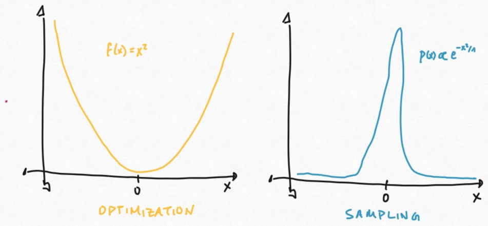
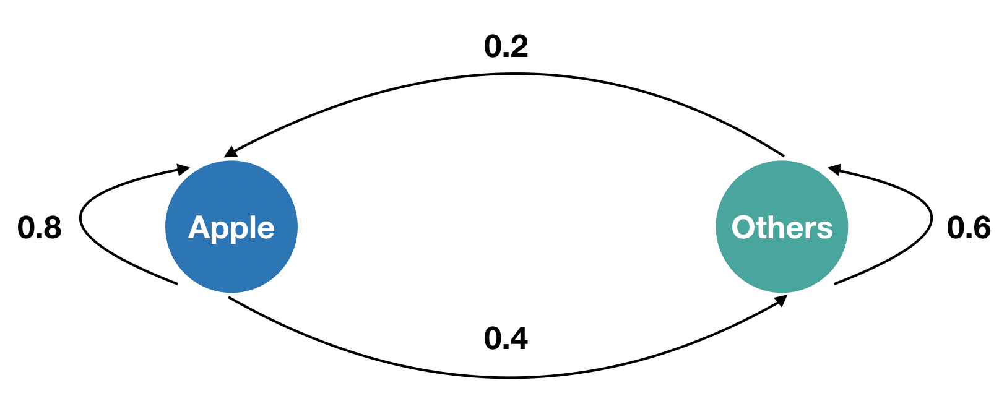
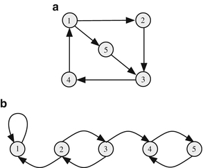
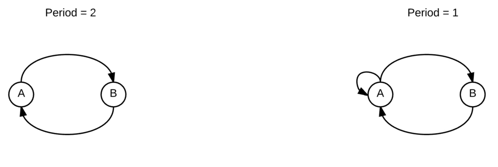
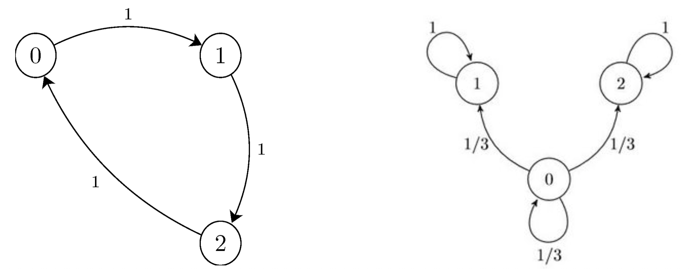

8. Markov Chain Monte Carlo#
This chapter is adapted from AM207 (Harvard, Fall 2021). Watch the recorded lecture.
In this chapter
Gibbs Sampler for a Discrete Distribution
Definition and Properties of Markov Chains
Markov Chain Monte Carlo
8.1. Motivation#
Recall that the Gibbs sampler was a sampling technique that we introduced along with rejection sampling and inverse CDF sampling.
We applied this sampler to sample from the posterior of a semi-conjugate Bayesian model (normal likelihood and Inverse-Gamma prior on the mean parameter). Using rejection sampling on this posterior would have been quite difficult (recall how difficult it is to tune rejection sampling; see Chapter 6).
But unlike in the case of rejection sampling and inverse CDF sampling, we never proved the correctness of this sampler!
8.2. Gibbs Sampler for a Discrete Distribution#
Gibbs Sampler for a Bivariate Discrete Distribution#
Suppose we have two independent random variables \(X\sim Ber(0.2)\) and \(Y\sim Ber(0.6)\). Their joint distribution is a categorical distribution:
over the set of possible outcomes \((X=1, Y=1), (X=0, Y=1), (X=1, Y=0), (X=1, Y=1)\).
A Gibbs sampler for \(p(X, Y)\) will start with a sample \((X=X_n, Y=Y_n)\) and then generate a sample \((X=X_{n+1}, Y=Y_{n+1})\) by
sampling \(X_{n+1}\) from
\[p(X|Y = Y_{n})\]sampling \(Y_{n+1}\) from
\[p(Y|X = X_{n+1})\]
We want to compute what is the distribution of the generated sample \((X=X_{n+1}, Y=Y_{n+1})\) given \((X=X_n, Y=Y_n)\), i.e. we want \(p(X=X_{n+1}, Y=Y_{n+1}| X=X_n, Y=Y_n)\), but there are \(4^2\) number of these probabilities! How do we succinctly represent them?
Gibbs Sampler as Transition Matrix and State Diagram#
We can represent the \(p(X=X_{n+1}, Y=Y_{n+1}| X=X_n, Y=Y_n)\) as a \(4\times 4\) matrix, \(T\), where the \(i, j\)-th entry is the probability of starting with sample \(i\) and generating sample \(j\).
Alternatively, we can visualize how the Gibbs sampler moves around in the sample space \((X, Y)\) with a diagram.


Limiting Distribution#
We see that computing the probability of the next sample given the current sample \((X=1, Y=1)\)
is equivalent to multiplying the vector \([1\;\; 0\;\; 0\;\; 0]\) with the matrix \(T\). Can you see why?
When we do, we get the distribution \([0.12\;\; 0.48\;\; 0.08\;\; 0.32]\) over the next sample. But this distribution looks just like the joint distribution \(p(X, Y)\)!
This means that if we start at \((X=1, Y=1)\), the next sample the Gibbs sampler returns will be from the joint distribution.
In fact, you can start with any point in the samples space \((X, Y)\) or any distribution over the sample space, the next sample the Gibbs sampler returns will be from the joint distribution. I.e. any vector times \(T\) will return \([0.12\;\; 0.48\;\; 0.08\;\; 0.32]\).
This proves the correctness of the Gibbs sampler for \(p(X, Y)\)!
8.3. Definition and Properties of Markov Chains#
Markov Chains in Discrete and Continuous Spaces#
A discrete-time stochastic process is set of random variables \(\{X_0, X_1, \ldots \}\), where each random variable takes value in \(\mathcal{S}\). The set \(\mathcal{S}\) is called the state space and can be continuous or finite.
A stochastic process satisfies the Markov property if \(X_n\) depends only on \(X_{n-1}\) (i.e. \(X_n\) is independent of \(X_1, \ldots, X_{n-2}\)). A stochastic process that satisfies the Markov property is called a Markov chain.
We will assume that \(p(X_n | X_{n-1})\) is the same for all \(n\).
Exercise: Give an example of a stochastic process that is not a Markov chain. Given an example of a stochastic process that is a Markov chain.
Transition Matrices and Kernels#
The Markov property ensure that we can describe the dynamics of the entire chain by describing how the chain transitions from state \(i\) to state \(j\). Why?
If the state space is finite, then we can represent the transition from \(X_{n-1}\) to \(X_{n}\) as a transition matrix \(T\), where \(T_{ij}\) is the probability of the chain transitioning from state \(i\) to \(j\):
The transition matrix can be represented visually as a finite state diagram.
If the state space is continuous, then we can represent the transition from \(X_{n-1}\) to \(X_{n}\) as transition kernel pdf, \( T(x, x') \), representing the likelihood of transitioning from state \(X_{n-1}=x\) to state \(X_{n} = x'\). The probability of transitioning into a region \(A \subset S\) from state \(x\) is given by
such that \(\int_{\mathcal{S}} T(x, y) dy = 1\).
Chapman-Kolmogorov Equations: Dynamics as Matrix Multiplication#
If the state space is finite, the probability of the \(n=2\) state, given the initial \(n=0\) state. can be computed by the Chapman-Kolmogorov equation:
We recognize \(\sum_{k\in \mathcal{S}}T_{ik}T_{kj}\) as the \(ij\)-the entry in the matrix \(TT\). Thus, the Chapman-Kolmogorov equation gives us that the matrix \(T^{(n)}\) for a \(n\)-step transition is
In particular, when we have the initial distribution \(\pi^{(0)}\) over states, then the unconditional distribution \(\pi^{(1)}\) over the next state is given by:
That is, \(\pi^{(1)} = \pi^{(0)} T\).
Example: Smart Phone Market Model#
Consider a simple model of the dynamics of the smart phone market, where we model the customer loyalty as follows:


The transition matrix for the Markov chain is:
Say that the market is initially \(\pi^{(0)} = [0.7\; 0.3]\), i.e. 70% Apple. What is the market distribution in the long term?
#transition matrix
T = np.array([[0.8, 0.2],
[0.4, 0.6]])
#initial distribution
pi_0 = np.array([0.7, 0.3]).reshape((1, -1))
#time
N = 500
pi_0.dot(np.linalg.matrix_power(T, N))
#try different values of N and different inital distributions!
array([[0.66666667, 0.33333333]])
Chapman-Kolmogorov Equations: Continuous State Space#
If the state space is continuous, the likelihood of the \(n=2\) state, given the initial \(n=0\) state, can be computed by the Chapman-Kolmogorov equation:
In particular, when we have the initial distribution \(\pi^{(0)}(x)\) over states, then the unconditional distribution \(\pi^{(1)}(x)\) over the next state is given by:
Properties of Markov Chains: Irreducibility#
A Markov chain is called irreducible if every state can be reached from every other state in finite time.


Properties of Markov Chains: Aperiodicity#
A state \(s\in \mathcal{S}\) is has period \(t\) if one can only return to \(s\) in multiples of \(t\) steps.
A Markov chain is called aperiodic if the period of each state is 1.


Properties of Markov Chains: Stationary Distributions#
A distribution \(\pi\) over the finite state space \(\mathcal{S}\) is a stationary distribution of the Markov Chain with transition matrix \(T\) if
i.e. performing the transition matrix doesn’t change the distribution.
The equivalent condition for continuous state space \(\mathcal{S}\) is:
Properties of Markov Chains: Limiting Distributions#
We are often interested in what happens to a distribution after many transitions,
If \(\pi^{(\infty)} = \underset{n\to \infty}{\lim}\pi^{(n)}\) exists (with some caveats in the continuous state case), we call it the limiting distribution of the Markov chain.
Fundamental Theorem of Markov Chains#
Now we are ready to relate all these properties of Markov chains in a single theorem:
Fundamental Theorem of Markov Chains: if a Markov chain is irreducible and aperiodic, then it has a unique stationary distribution \(\pi\) and \(\pi^{\infty} = \underset{n\to \infty}{\lim}\pi^{(n)} = \pi\).
In practice, the theorem says you can start with any initial distribution over the state space \(\mathcal{S}\), asymptotically, you will always obtain the distribution \(\pi\).
While we unfortunately can’t prove the theorem, we can indicate why both conditions are helpful.


Properties of Markov Chains: Reversibility#
A Markov chain is called reversible with respect to a distribution \(\pi\) over a finite state space \(\mathcal{S}\) if the following holds:
For a continuous state space, the condition is:
The condition for reversibility is often called the detailed balance condition.
Reversibility and Stationary Distributions#
Using reversibility, we have another way to characterize a stationary distribution.
Theorem: If a Markov chain, with transition matrix or kernel pdf \(T\), is reversible with respect to \(\pi\). Then \(\pi\) is a stationary distribution of the chain.
Proof: We will give the proof for the case of a continuous state space \(\mathcal{S}\). Suppose that \(\pi(x)T(x, y) = T(y, x) \pi(y)\), then
8.4. Markov Chain Monte Carlo#
Markov Chain Monte Carlo Samplers#
Every sampler for a distribution \(p(\theta)\) over the domain \(\Theta\) defines a stochastic process \(\{X_0, X_1, \ldots, \}\), where the state space is \(\Theta\).
If the sampler defines a Markov chain whose unique stationary and limiting distribution is \(p\), we call it a Markov Chain Monte Carlo (MCMC) sampler.
That is, for every MCMC sampler, we have that
Stationary: \(pT = p\)
Limiting: \(\underset{n\to \infty}{\lim} \pi^{(n)} = p\), for any \(\pi^{(0)}\)
where \(T\) is the transition matrix or kernel pdf defined by the sampler.
What Do We Need to Prove to get \(pT=p\) and \(\underset{n\to \infty}{\lim} \pi^{(n)} = p\)?#
Prove that the sampler is irreducible and aperiodic. Then, there is a unique stationary distribution \(\pi\) such that
\[\pi T = \pi.\]Prove that the sampler is reversible or detailed balanced with respect to \(p\). Then,
\[\pi = p.\]
Gibbs as MCMC#
We’ve seen an example where the Gibbs sampler for a discrete target distribution defines a MCMC sampler.
But what about Gibbs samplers for a continuous target distribution \(p\)? Certainly, the samples \(X_n\) obtained by the sampler defines a Markov Chain: the distribution over the next sample depends only on the current sample.
But, in order to be a MCMC sampler, we need to prove that \(p\) is the stationary and limiting distribution of the sampler?
8.5. Summary#
We need more samplers! Now we’ve seen that every activity in Bayesian modeling requires sampling! But our current tool-box of sampler’s isn’t really that great.
What’s wrong with Inverse CDF Sampling?
What’s wrong with Rejection Sampling?
What’s wrong with Gibbs Sampling?
Samplers as Markov Chains – Markov Chain Monte Carlo Sampling: Why do we need to talk about Markov Chains again?
All the samplers we’ve seen so far define Markov Chains. How?
What’s the big deal with Markov Chains? They are easy to describe and analyze!
Describing a Markov Chain just means describing how the chain evolves from a given state to the next (the transition matrix or transition kernel)
Many nice Markov Chains have predictable long-term (asymptotic) behavior, i.e. as time goes on, the probability that the chain will visit state \(0\) is 0.6, the probability that the chain will visit state \(1\) is 0.2 etc.
What are some useful behaviors to look for in Markov Chains?
Stationary distributions (i.e. when the market is 70% Apple customers and 30% Android then the market distribution will be stable)
How do you check that a distribution \(\pi\) is stationary?
Limiting distributions (i.e. however the market for smart phones start off, eventually it will be 70% Apple customers)
How do you check that a distribution is limiting?
Claim: we want our samplers to have a limiting distribution and we want that distribution to be our target distribution!
Why?
What kinds of Markov Chains have limiting distributions?
Fundamental Theorem of Markov Chains: if a Markov chain is irreducible and aperiodic, then it has a unique stationary distribution \(\pi\) and \(\pi^{\infty} = \underset{n\to \infty}{\lim}\pi^{(n)} = \pi\).
In practice, the theorem says you can start with any initial distribution over the state space \(\mathcal{S}\), asymptotically, you will always obtain the distribution \(\pi\).
While we unfortunately can’t prove the theorem, we can indicate why both conditions are helpful.
But how do I check that the limiting distribution is our target distribution?
We check that our sampler satisfy the detailed balance condition with respect to the target distribution.
Theorem: If a Markov chain satisfies the detailed balance condition with respect to \(\pi\). Then \(\pi\) is a stationary distribution of the chain.
By the Fundamental Theorem, an irreducible and aperiodic Markov Chain, since our target distribution is stationary, it must be the limiting distribution.
How Do I Use This In Practice? What do we need to prove to show that our sampler is correct (is an MCMC sampler)?
Show that the Markov Chain defined by our sampler is irreducible and aperiodic
Show that the sampler satisfies detailed balance with respect to the target distribution
Invoke the Fundamental Theorem
But do I HAVE to be Bayesian??? So some of you might be thinking, I will never work with a Bayesian model because MLE’s are so easy to compute. You’ll be disappointed to find out in Chapter 11 that MLE inference can be just as difficult as Bayesian inference.
But do I HAVE to do probabilistic machine learning at all??? Related questions:
If not you who?
What is the broader impact of MCMC theory?
8.6. Further Reading#
Markov Chain Monte Carlo
(Introductory) Gibbs Sampling for the Uninitiated
(Introductory) Finite State Markov Chains: A Linear Algebra Treatment
(In Depth) Probabilistic Inference Using Markov Chain Monte Carlo Methods